05/08/2025 — Đau ngực, điện tâm đồ này, và troponin không phát hiện được sau 6 giờ đau
Bản dịch tiếng Việt của bài "Chest pain, this ECG, and an undetectable troponin after 6 hours of pain" – Dr. Smith’s ECG Blog. Giữ nguyên toàn bộ 13 hình ảnh của bản gốc.

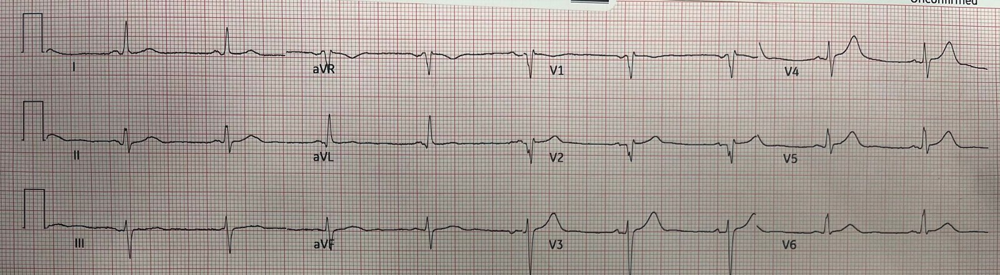
Những điện tâm đồ này được một cựu bác sĩ fellow siêu âm của chúng tôi, Will Smoot, nhắn tin gửi cho tôi
Một bệnh nhân nam trung niên đến khám vì đau ngực cấp.
Điện tâm đồ ban đầu này đã được ghi:

Smith: có sóng T tối cấp (hyperacute T waves) rõ ràng ở V4-5. Vì vậy điện tâm đồ này có giá trị chẩn đoán tắc LAD.
Queen of Hearts:

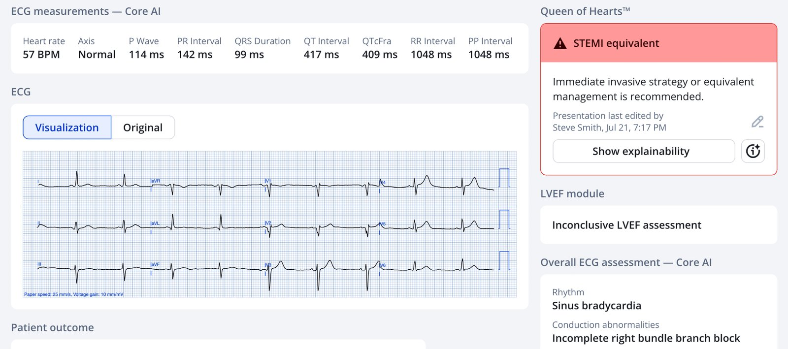
Đây là phần cô ấy giải thích:

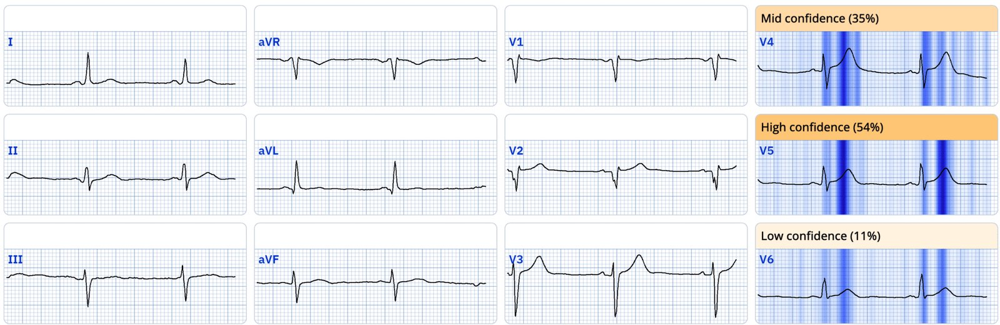
Cô ấy có đúng không?
Ứng dụng PMcardio for Individuals 3.0 mới nay đã có mô hình Queen of Hearts mới nhất và khả năng giải thích của AI (AI explainability) (bản đồ nhiệt màu xanh lam)! Tải ngay cho iOS hoặc Android. https://www.powerfulmedical.com/pmcardio-individuals/ (BS. Smith và BS. Meyers đã huấn luyện mô hình AI này và là cổ đông của Powerful Medical).
Điện tâm đồ trước đó, 9 tháng trước

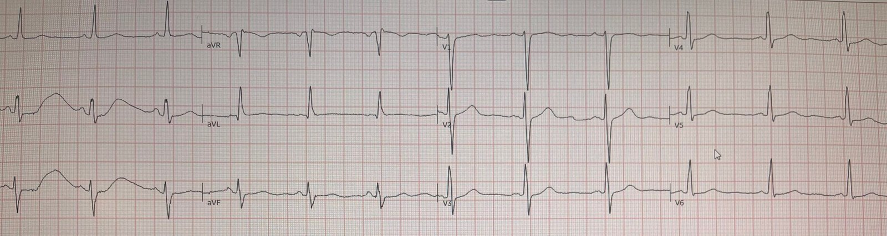
Rõ ràng là các sóng T trên điện tâm đồ phía trên giờ đây là sóng T tối cấp so với điện tâm đồ trước đó này.
Một điện tâm đồ ghi lại đã được thực hiện:

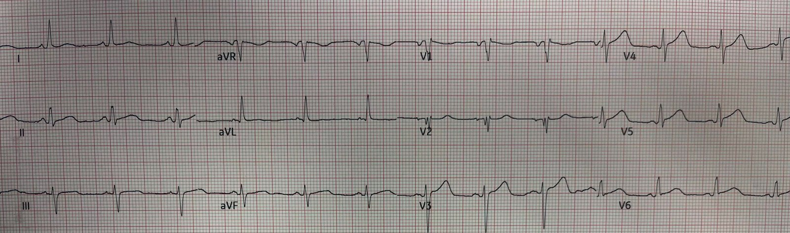
Giờ đây các sóng T trông đồ sộ và to béo hơn. Điện tâm đồ này có giá trị chẩn đoán tắc LAD (OMI) một cách không thể chối cãi

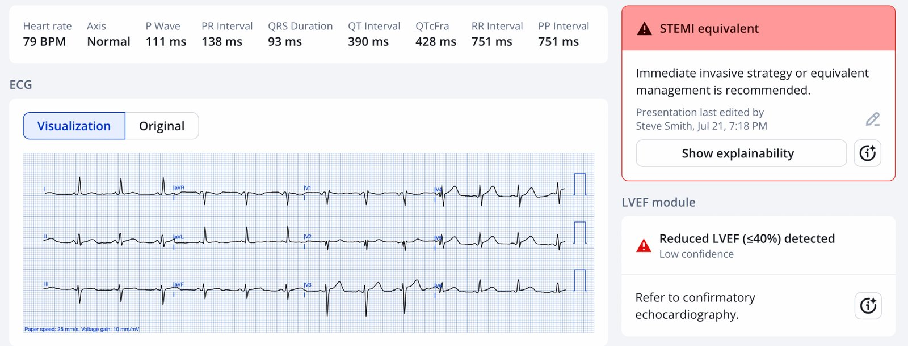

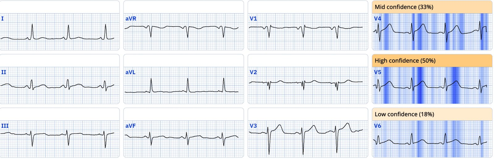
Bác sĩ đã kích hoạt phòng thông tim (cath lab), việc này đòi hỏi phải chuyển bệnh nhân tới một bệnh viện khác ở rất xa.
Thật tuyệt là anh ấy đã không chờ kết quả troponin!
Ít lâu sau, kết quả troponin ban đầu trả về là không phát hiện được.
Lúc này anh ấy lo rằng đây là một lần kích hoạt nhầm. Chụp mạch vành chưa cho thấy một OMI rõ ràng. Kết quả cho thấy LAD "hẹp" 80% (một chỗ "hẹp" không nhất thiết là thủ phạm — hẹp có thể là một tình trạng mạn tính) và có vẻ là một thủ phạm cấp ("mảng xơ vữa có hình ảnh không ổn định"), nhưng anh ấy vẫn hoài nghi rằng đây là OMI, chủ yếu vì troponin không phát hiện được.
Anh ấy gọi cho tôi và tôi trấn an rằng troponin ban đầu không phát hiện được không phải là điều bất thường trong OMI cấp.
Anh ấy nói: "Vâng, nhưng bệnh nhân đã đau suốt 6 giờ rồi."
Sau đó, troponin I lần 2 trả về là 4461 ng/L. Không đo thêm troponin lần nào nữa.
Một điện tâm đồ sau PCI đã được ghi:

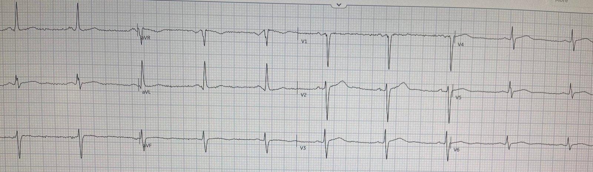
Vẫn còn sóng T tối cấp tồn dư. Queen nhận ra chúng:

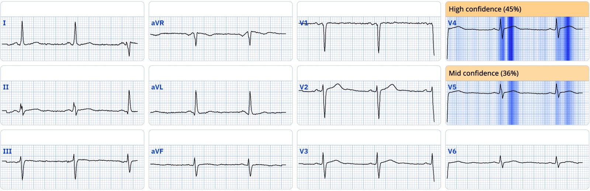
Và một điện tâm đồ khác 3 giờ sau đó:

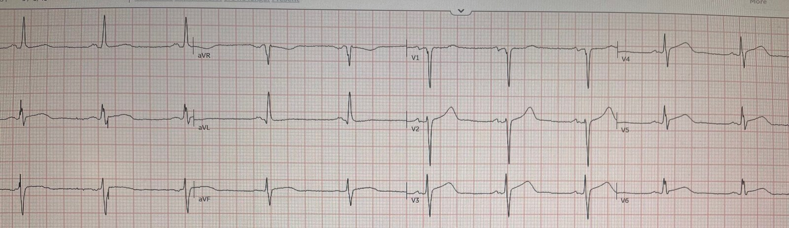
Smith: Điện tâm đồ này thực sự trông như có thể biểu hiện tình trạng tắc lại (lại có sóng T tối cấp và ST chênh lên mới ở V4-6 đạt tiêu chuẩn!), nhưng tôi không có thêm thông tin nào về điều đó.
Queen đồng ý:

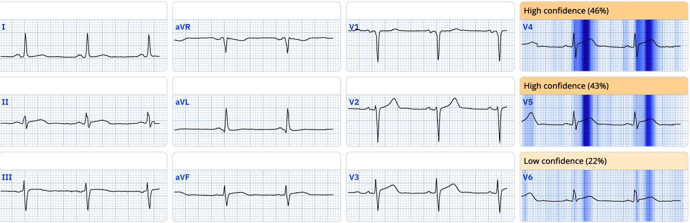
LAD có tắc lại không? Không chắc, nhưng cuối cùng nó đã tái tưới máu:

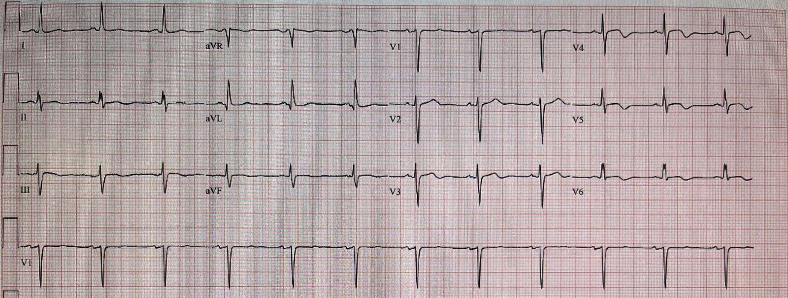
Cho thấy sóng T đảo ngược ở các chuyển đạo bị ảnh hưởng (sóng T tái tưới máu)
Troponin đỉnh I là 10,220 ng/L (điển hình của một STEMI).
Siêu âm tim cho thấy EF tốt, 60-65%, với giảm động nhẹ thành vách.
Điểm cần học:
- Khi bạn có một điện tâm đồ có giá trị chẩn đoán OMI, KHÔNG được chờ troponin vì:
- A) cơ tim chết dần trong lúc bạn chờ
- B) Kết quả có thể âm tính và khiến bạn phải chờ lâu hơn nữa để có kết quả lần sau.
- Đau 6 giờ KHÔNG nhất thiết có nghĩa là nhồi máu 6 giờ. Có thể có thiếu máu cục bộ lúc có lúc không mà không dẫn tới nhồi máu. Thường thì chỉ khi cơn đau trở nên liên tục không dứt bệnh nhân mới đi khám. Vào thời điểm đó, thời gian thiếu máu cục bộ có thể chưa đủ để làm tăng troponin.
- Troponin ban đầu không phát hiện được chỉ có giá trị tiên đoán âm rất cao trong bối cảnh điện tâm đồ bình thường hoặc không có giá trị chẩn đoán. Trong bối cảnh điện tâm đồ có giá trị chẩn đoán, nó gần như vô giá trị
Chúng tôi đã nghiên cứu độ nhạy và NPV (giá trị tiên đoán âm) của troponin không phát hiện được (dưới giới hạn phát hiện – "LoD") trong 2 nghiên cứu sau:
Sandoval Y, Smith SW, Love SA, Sexter A, Schulz K, Apple FS. Single High-Sensitivity Cardiac Troponin I to Rule Out Acute Myocardial Infarction. Am J Med [Internet] 2017;130(9):1076-1083.e1. Truy cập tại: http://dx.doi.org/10.1016/j.amjmed.2017.02.032 (Một lần đo troponin I tim độ nhạy cao để loại trừ nhồi máu cơ tim cấp)
Sandoval Y, Smith SW, Shah ASV, và cs. Rapid Rule-Out of Acute Myocardial Injury Using a Single High-Sensitivity Cardiac Troponin I Measurement. Clin Chem [Internet] 2017;63(1):369–76. Truy cập tại: http://dx.doi.org/10.1373/clinchem.2016.264523 (Loại trừ nhanh tổn thương cơ tim cấp bằng một lần đo troponin I tim độ nhạy cao)
Loại trừ chỉ dùng LoD (giới hạn phát hiện), và khi kết hợp với điện tâm đồ bình thường:
"Ở những bệnh nhân có hs-cTnI<LoD lúc nhập viện (27% bệnh nhân), bất kể dấu hiệu trên điện tâm đồ, NPV và độ nhạy đối với nhồi máu cơ tim cấp lần lượt là 99.6% (KTC 95%, 98.9%-100%) và 98.8% (KTC 95%, 97.2%-100%) (Bảng 2). Chỉ dùng hs-cTnI<LoD, 2 trong số 170 bệnh nhân nhồi máu cơ tim cấp bị bỏ sót, tương ứng tỷ lệ bỏ sót 1.2% (hoặc 2 trong số 444 bệnh nhân có hs-cTnI<LoD, 0.5%)."
"So với chỉ dùng hscTnI<LoD, việc bổ sung điện tâm đồ bình thường (16% bệnh nhân) cho NPV 99.6% (KTC 95%, 98.9%-100%) và độ nhạy 99.4% (KTC 95%, 98.3%-100%) đối với nhồi máu cơ tim cấp. Dùng hs-cTnI<LoD kèm điện tâm đồ bình thường, chỉ 1 trong số 170 bệnh nhân nhồi máu
cơ tim cấp bị bỏ sót, tương ứng tỷ lệ bỏ sót 0.6% (hoặc 1 trong số 254 bệnh nhân có hs-cTnI<LoD và điện tâm đồ bình thường, 0.4%)."
"Trong nhóm thẩm định (validation cohort), 22% có hs-cTnI dưới LoD, với NPV và độ nhạy chẩn đoán đối với tổn thương cơ tim cấp là 98.8% (97.9–99.7) và 99.3% (98.7–99.8), và NPV đối với AMI hoặc tử vong do tim trong 30 ngày là 99.1% (98.2–99.8)."
Trong bối cảnh điện tâm đồ có giá trị chẩn đoán OMI, độ nhạy và NPV đó thấp hơn nhiều!
= = =
======================================
BÌNH LUẬN CỦA TÔI, bởi KEN GRAUER, MD (5/8/2025):
Câu hỏi tôi đặt ra nhiều hơn bất kỳ câu nào khác trong những năm làm giảng viên là: "Kết quả (các) xét nghiệm bạn chỉ định có làm thay đổi cách xử trí của bạn không?" Ca hôm nay là một ví dụ tối ưu cho thấy vì sao tôi hay đặt câu hỏi này đến vậy.
- Bác sĩ điều trị trong ca hôm nay đã hoài nghi quyết định kích hoạt phòng thông tim của mình vì troponin ban đầu trả về âm tính. Nhưng như BS. Smith đã nhấn mạnh trong phần Điểm cần học — kết quả troponin ban đầu trong ca hôm nay hoàn toàn không nên làm thay đổi cách xử trí.
- Lý do là bệnh nhân hôm nay đến khám vì CP (đau ngực) mới xuất hiện — và trong bối cảnh này, điện tâm đồ ban đầu mà tôi đặt lại ở Hình 1 cho thấy cần kích hoạt phòng thông tim bất kể giá trị troponin ban đầu là bao nhiêu (vì có tới 25% các nhồi máu STEMI+ không đạt ngưỡng "chẩn đoán xác định" (rule-in) ở lần troponin ban đầu — Wereski và cs. — JAMA Cardiology, 2020).
= = =
Vì sao điện tâm đồ ban đầu hôm nay có giá trị chẩn đoán một OMI cấp?
Tôi tập trung bình luận vào điện tâm đồ ban đầu hôm nay — cũng như vào việc bản ghi thứ 2 và thứ 3 nêu trên trong phần bàn luận của BS. Smith củng cố nhận định của chúng ta về bản ghi thứ 1 đó như thế nào.
- Ở một bệnh nhân có CP mới xuất hiện (như người đàn ông trung niên trong ca hôm nay) — "mắt" tôi lập tức bị hút về chuyển đạo V4 (nằm trong hình chữ nhật MÀU ĐỎ ở điện tâm đồ #1). Với kích thước khiêm tốn của phức bộ QRS ở chuyển đạo này — sóng T quá cao và "đồ sộ" ở V4 (đủ lớn, với đỉnh đủ "béo" và đáy đủ rộng để "nuốt chửng" sóng R nhỏ bé) rõ ràng là sóng T tối cấp.
- Trong bối cảnh biết rằng chuyển đạo V4 là tối cấp cho tới khi chứng minh được điều ngược lại — các chuyển đạo lân cận V3 và V5 cũng đều biểu hiện sóng T lớn không tương xứng (dù chuyển đạo V3 khó đánh giá hơn vì chúng ta không thể biết sóng S ở chuyển đạo này thực sự sâu đến đâu).
- Điểm MẤU CHỐT: Điện cực V1 và V2 gần như chắc chắn đã bị đặt quá cao trên ngực vì: i) Cả hai chuyển đạo này đều biểu hiện r' tận (điều không thường gặp ở V1 và rất bất thường ở chuyển đạo V2); — ii) Sóng P ở chuyển đạo V1 âm hoàn toàn; — và iii) hình dạng QRS ở cả V1 và V2 giống hình dạng QRS ở chuyển đạo aVR (Xem trang của chúng tôi về Technical Misadventures (Sự cố kỹ thuật) để có nhiều ví dụ về đặt sai vị trí điện cực V1,V2).
- Lý do việc nhận ra đặt sai vị trí điện cực V1,V2 lại quan trọng đến vậy trong ca hôm nay là vì chúng ta thấy sóng T tối cấp ở các chuyển đạo V3,V4,V5. Vì các chuyển đạo chi ở điện tâm đồ #1 không có giá trị chẩn đoán — đặt đúng vị trí điện cực V1,V2 sẽ giúp củng cố thêm nghi ngờ mạnh mẽ của chúng ta về OMI LAD cấp.
- ĐIỀU CỐT LÕI: Với bệnh sử CP mới xuất hiện và sóng T tối cấp ở các chuyển đạo V3,V4,V5 — ngay cả khi không thể đánh giá các chuyển đạo V1,V2 — nhu cầu thông tim kịp thời đã được xác lập.
Hình 1: So sánh 3 điện tâm đồ đầu tiên trong ca hôm nay.

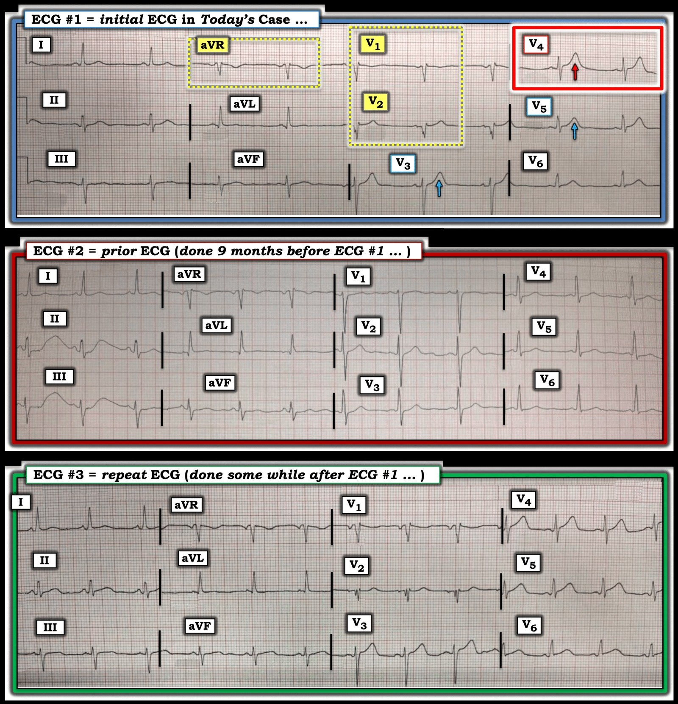
Còn điện tâm đồ #2 thì sao?
Không phải lúc nào cũng có sẵn điện tâm đồ trước đó vào đúng lúc bạn cần. Nhưng trong ca hôm nay thì có.
- Như BS. Smith đã nêu — việc so sánh từng chuyển đạo một giữa điện tâm đồ #1 và điện tâm đồ #2 (ghi 9 tháng trước đó) khẳng định không còn nghi ngờ gì về tính cấp tính của các dấu hiệu ST-T ở chuyển đạo V3,V4,V5 trên điện tâm đồ ban đầu.
Cũng cần lưu ý ở điện tâm đồ #2 các dấu hiệu sau:
- Điện tâm đồ #2 cho chúng ta biết rằng không chỉ các sóng T ở chuyển đạo V3,V4,V5 của điện tâm đồ #1 là tối cấp — mà sóng T ở chuyển đạo V6 của điện tâm đồ #1 cũng đầy đặn hơn nhiều (do đó cũng là tối cấp) so với ở bản ghi trước đó.
- Các chuyển đạo chi ở điện tâm đồ #1 quả thực không có giá trị chẩn đoán (dù có nhiễu đáng kể làm biến dạng sóng ST-T ở 2 phức bộ đầu tiên của chuyển đạo II và III trên điện tâm đồ #2).
- Lưu ý rằng chuyển đạo V1 và V2 trên điện tâm đồ trước đó có sóng P dương bình thường — sóng r khởi đầu bình thường ở chuyển đạo V1, và sóng R tương đối cao ở chuyển đạo V2 (so với sóng Q ở chuyển đạo V1,V2 của điện tâm đồ #1) — và sóng T dương ở chuyển đạo V1 của bản ghi trước đó. Điều này xác nhận nghi ngờ của tôi về việc điện cực V1,V2 bị đặt quá cao ở điện tâm đồ #1.
Còn điện tâm đồ #3 thì sao?
ĐIỂM THEN CHỐT (PEARL): Hãy chắc chắn rằng khi xem xét các điện tâm đồ liên tiếp — bạn làm việc đó bằng cách đi từng chuyển đạo một (điều dễ thực hiện ở Hình 1, nơi tôi đã đặt 3 bản ghi này cạnh nhau). Không so sánh từng chuyển đạo một giữa 2 bản ghi bạn đang xem thì quá dễ bỏ sót các dấu hiệu tinh tế.
- Một lần nữa — điện cực V1,V2 đã bị đặt quá cao trên ngực ở điện tâm đồ #3 (Hãy nhớ rằng điện tâm đồ #3 vẫn được ghi tại khoa cấp cứu (ED) ít lâu sau điện tâm đồ #1 — do đó có lẽ do cùng một kỹ thuật viên ghi. Ngược lại — điện tâm đồ #2 được ghi 9 tháng trước đó, nên rõ ràng do một kỹ thuật viên khác ghi, người đã đặt đúng vị trí điện cực V1,V2 trên ngực).
- Điểm MẤU CHỐT: Như BS. Smith đã nêu — một số chuyển đạo ở điện tâm đồ #3 trông cấp tính hơn so với ở điện tâm đồ #1 (Giờ đây có tăng ST dạng vòm (coving) tinh tế nhưng có thật ở cả 3 chuyển đạo dưới trên điện tâm đồ #3 [người dịch: nguyên văn ghi “#2”, nhiều khả năng là lỗi đánh máy] so với điện tâm đồ #1 — cũng như tăng "thể tích" đoạn ST kèm ST thẳng đuỗn ở chuyển đạo V4,V5,V6).